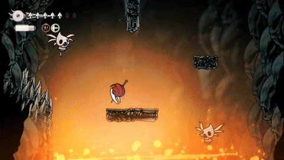
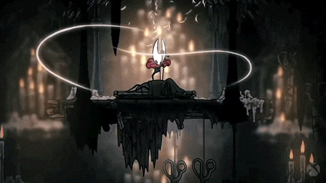

¿Qué es Silksong?
Hollow Knight: Silksong es un metroidvania de acción y aventura en 2D y tiene lugar en un reino mordaz habitado por artrópodos antropomorfizados. El jugador controla a Hornet, una criatura arácnida que empuña una aguja para combatir enemigos. Durante su aventura, se encuentra con muchas criaturas hostiles. El retador sistema de combate incentiva paciencia por encima de los reflejos. El modo de pelear de Hornet es acrobático y permite realizar combinaciones de ataques letales contra los enemigos. Los blasones o crestas son el sistema que permite equipar habilidades, herramientas y modifica el estilo de ataques. Cada blasón tiene una capacidad pasiva distinta y una distribución distinta de tipo de herramientas. Las "herramientas" disponibles se catalogan en 3 grupos: rojas, azules y amarillas. Las herramientas rojas proveen de un ataque arrojable con munición limitada; las azules aportan efectos defensivos, e.g. resistencia al fuego; las amarillas ofrecen soporte general, como mostrar la ubicación en el mapa. El juego contiene más de 165 enemigos diferentes. Hornet también encontrará muchos aliados en calidad de personaje no jugable. Silksong cuenta con un sistema de misiones secundarias, llamado deseos prometidos, categorizados en caza, acumulación, exploración y gran caza. A diferencia de su predecesor, donde las tareas eran vagas y debían revelarse, en Silksong los deseos aparecen en el menú y permiten observar su progreso. Hornet será capaz de forjar armas y herramientas a partir de materiales, los cuales pueden servir como sustituto del sistema de amuletos en Hollow Knight.

Dificultad aproximada del Platino
8/10
Las estimaciones de dificultad provienen de la experiencia propia de cada usuario con respecto a su partida, recursos, niveles, jefes y tiempo para lograrlo. Esto puede variar si ya jugaste juegos de estilo "metroidvania" o si no tenés ninguna experiencia previa, puede que te resulte frustrante al principio. Vamos a dividir los trofeos en 3 tipos según su dificultad y manera de conseguirlos: Fáciles (generalmente conseguidos a través de la historia principal), Medios (como coleccionables, misiones secundarias, etc.) y Difíciles; los únicos trofeos que están en esta categoría serán los de tipo 'speedrun'.

Horas promedio
100hs
AAl igual que con la dificultad, el tiempo para conseguir este platino es aproximado y depende mucho de la habilidad del jugador para poder desenvolverse en el mundo del videojuego. La historia principal en tu primera partida puede tomarte en promedio entre 50h y 60h. Y vas a necesitar una segunda partida para poder conseguir los trofeos de tipo 'speedrun', que requieren terminar la historia en menos de 5h y 30h respectivamente.
Trofeos necesarios
Total: 34
| CALIDAD | NOMBRE | TIPO |
|---|---|---|
| BRONCE | Encuadernado | Facil |
| Armonioso | ||
| Caballero Blanco | ||
| Concedido | ||
| PLATA | Recuerdo | |
| ORO | Hermana del vacio | |
| Seda atrapada | ||
| Finalizacion | ||
| BRONCE | Cartografo | Medio |
| Reclamado | ||
| Protegido | ||
| Restaurado | ||
| Buscador de pulgas | ||
| Cazador entusiasta | ||
| Regenerado | ||
| PLATA | Arsenal | |
| Consumido | ||
| Entrelazados | ||
| Extendido | ||
| Enmascarado | ||
| Tejido | ||
| Amigo pulga | ||
| Pasando de la era | ||
| Verdadero cazador | ||
| Entrelazados | ||
| Verdadero cazador | ||
| ORO | Hermana del vacio | |
| Seda atrapada | ||
| Chico retorcido | ||
| Reina tejedora | ||
| Finalizacion | ||
| PLATA | Finalizacion rapida | Dificil |
| Corredor rapido |